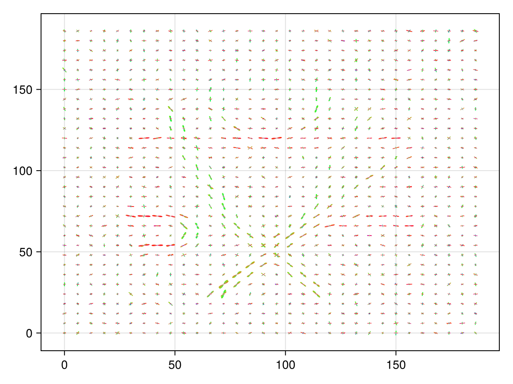

FCUP
- FCUP
- Define the Model
- Define the seeds
- Compute the streamlines
- plot the streamlines
- Compute the connections
This is a more advanced tutorial because we want to show how to apply a mask.
Define the Model
import Tractography as TGmodel = TG.Model(Δt = 0.125f0, foddata = TG.FODData((@__DIR__) * "/../../examples/fod-FC.nii.gz"), cone = TG.Cone(45), proba_min = 0.015f0, )Model with eltype Float32
├─ Δt = 0.125
├─ minimal probability = 0.015
├─ cone = Cone{Int64}(45)
├─ mollifier = max_mollifier
├─ evaluation of the basis = PreComputeAllFOD()
└─ data : (lmax = 8)
Just for fun, we plot the FODs of the model.
using CairoMakief = Figure(backgroundcolor = :white);sc = Axis(f[1,1])TG.plot_fod!(sc, model; n_sphere = 1500, radius = 0.5, st = 2);f
Define the seeds
We next apply a mask on the boundary of which the streamlines stop.
using NIfTImask = NIfTI.niread((@__DIR__) * "/../../examples/wm-FC.nii.gz");TG._apply_mask!(model, mask);┌ Warning: #= line 0 =#:
│ `LoopVectorization.check_args` on your inputs failed; running fallback `@inbounds @fastmath` loop instead.
│ Use `warn_check_args=false`, e.g. `@turbo warn_check_args=false ...`, to disable this warning.
└ @ LoopVectorization ~/.julia/packages/LoopVectorization/hIVbd/src/condense_loopset.jl:1166We compute Nmc streamlines, hence we need Nmc seeds
Nmc = 100_000seeds = TG.from_fod(model, Nmc; maxfod_start = true)6×100000 Matrix{Float32}:
147.306 42.2156 125.647 … 147.068 125.699 89.7177
75.0677 123.426 99.0981 65.5035 68.7368 60.0118
8.77079 6.22748 2.64502 8.79593 8.6136 8.76187
-0.984924 -0.997005 0.947909 0.852836 0.927485 0.992391
-0.0958604 -0.0143211 0.317479 -0.200866 0.364301 0.055326
-0.144 -0.076 -0.026 … -0.482 0.084 -0.11Compute the streamlines
streamlines, tract_length = TG.sample(model, TG.Deterministic(), seeds; nt = 1000);println("Dimension of computed streamlines = ", size(streamlines))┌ Warning: #= line 0 =#:
│ `LoopVectorization.check_args` on your inputs failed; running fallback `@inbounds @fastmath` loop instead.
│ Use `warn_check_args=false`, e.g. `@turbo warn_check_args=false ...`, to disable this warning.
└ @ LoopVectorization ~/.julia/packages/LoopVectorization/hIVbd/src/condense_loopset.jl:1166
kernel : 6.173442 seconds (590.75 k allocations: 31.990 MiB, 3.94% compilation time)
Dimension of computed streamlines = (3, 1000, 100000)plot the streamlines
f = Figure(backgroundcolor = :white, size=(800,800));
ind_st = findall(tract_length .> 60)
scene = Axis(f[1,1], title = "$(length(ind_st)) / $(length(stl_lengths)) selected streamlines")
TG.plot_fod!(scene, model; n_sphere = 500, radius = 0.3, st = 1);
TG.plot_streamlines!(scene, streamlines[:, :, ind_st[1:10:end]], tract_length[ind_st[1:10:end]])
fWe can also add the seeds
scatter!(scene, seeds[1:3, ind_st[1:10:end]], color = :black)
fCompute the connections
When computing structural connectivity, we don't need to record the entire streamline but only its extremities.
streamlines, tract_length = TG.sample(model, TG.Endpoints(TG.Deterministic()), seeds; nt = 1000);println("Dimension of computed streamlines = ", size(streamlines))┌ Warning: #= line 0 =#:
│ `LoopVectorization.check_args` on your inputs failed; running fallback `@inbounds @fastmath` loop instead.
│ Use `warn_check_args=false`, e.g. `@turbo warn_check_args=false ...`, to disable this warning.
└ @ LoopVectorization ~/.julia/packages/LoopVectorization/hIVbd/src/condense_loopset.jl:1166
kernel : 6.732834 seconds (178.70 k allocations: 9.982 MiB, 2.21% compilation time)
Dimension of computed streamlines = (3, 2, 100000)